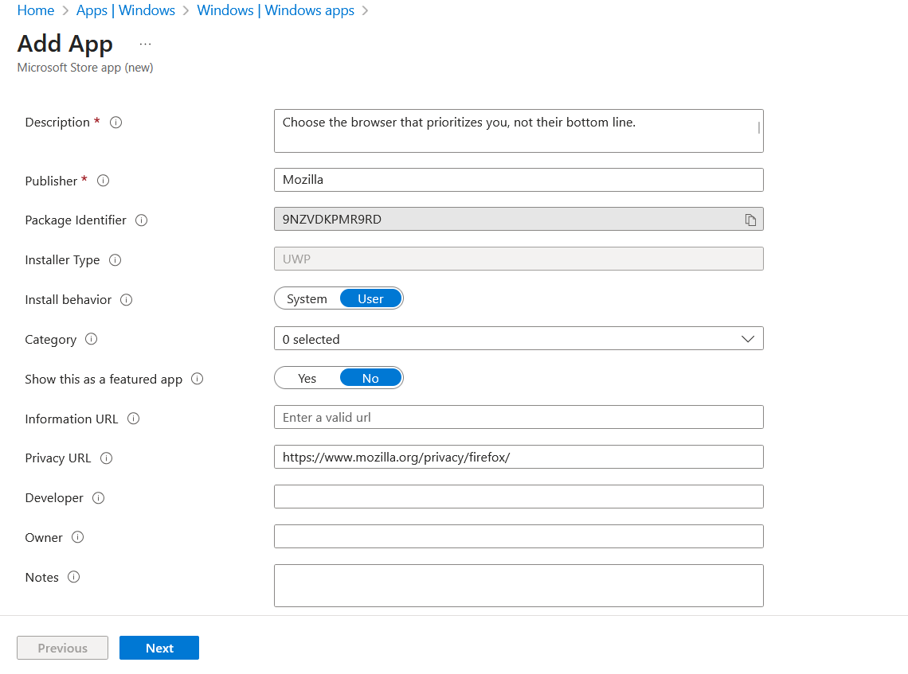

Apps
Naast het afdwingen van specifieke configuraties via configuration policies kunnen we met Intune ook applicaties op toestellen uitrollen.
Bij het installeren van applicaties op Windows-toestellen kunnen we kiezen uit verschillende types applicaties:
| Apptype | Beschrijving |
|---|---|
| Microsoft Store (new) | Apps uit de Microsoft Store die via Intune kunnen worden uitgerold. Dit is de aanbevolen installatiemethode. Applicaties worden automatisch bijgewerkt. |
| Microsoft 365 Apps | Applicaties uit de Office-suite, zoals Word, Excel, PowerPoint, Outlook en Teams. |
| Line-of-Business (LOB) App | Applicaties verpakt als MSI-installatiebestanden. Updates moeten handmatig beheerd worden. |
| Windows app (Win32) | Applicaties verpakt als EXE-installatiebestanden. Updates moeten handmatig beheerd worden. |
1. Applicaties installeren
Deze handleiding toont hoe je een Microsoft Store (new)-app installeert via Intune.
1.1. Een nieuwe applicatie toevoegen
- Ga in het linkermenu naar Apps.
- Selecteer in het middelste menu, in de sectie By platform, Windows.
- Klik op de knop Create.
- Selecteer het apptype.
- Klik op de blauwe knop Select.

1.2. De applicatie selecteren
- Klik op de tekst Search the Microsoft Store app (new).
- Geef de naam van de software in de zoekbalk in.
- Selecteer de software en klik op de knop Select.

1.3. App-details
- Vul de app-eigenschappen in of wijzig ze
- Klik op "Next"

1.4. App-toewijzing (Assignments)
- Wijs de app toe aan een gebruikers- of toestelgroep
- Klik op "Next"

- Required: de app wordt automatisch geïnstalleerd op alle toestellen die aan de groep zijn toegewezen.
- Available for enrolled devices: de app is beschikbaar op het toestel, maar de gebruiker moet ze zelf installeren vanuit de Company Portal.
- Uninstall: de app wordt verwijderd van alle toestellen die aan de groep zijn toegewezen.
1.5. Review + create
Voordat de applicatie op de toestellen wordt uitgerold, zie je een overzicht van alle details. Klik op de blauwe knop Create om de applicatie uit te rollen.

Je kan de installatie van een app die via Intune is uitgerold versnellen door:
- De service Microsoft Intune Management Extension op je Windows-toestel te herstarten
2. Controleren
Je kan Intune gebruiken om te controleren of de applicatie op het toestel is uitgerold.
- Navigeer in Intune naar de app die je hebt uitgerold.
- Klik op Device install status

3. Company Portal
Wanneer je applicaties uitrolt als Required, kunnen gebruikers de app niet van hun toestel verwijderen. Alle apps op die manier uitrollen kan toestellen overladen. Om dat te vermijden, kan je gebruikers toestaan om applicaties zelf te installeren via de Company Portal. De Company Portal is een interne Microsoft Store waarin IT-beheerders bepalen welke applicaties aan eindgebruikers ter beschikking worden gesteld. Elke eindgebruiker kan kiezen welke applicaties hij installeert. Applicaties die niet beschikbaar zijn gesteld in de Company Portal, kunnen niet geïnstalleerd worden.
3.1. De Company Portal uitrollen
Rol de Company Portal-app uit als Microsoft Store (new)-app, als required app op de Windows-toestellen.
3.2. Een app beschikbaar stellen in de Company Portal
Een app beschikbaar stellen in de Company Portal verloopt volgens hetzelfde proces als het installeren van een app. Bij het toewijzen van de app selecteer je echter "Available for enrolled devices" in plaats van "Required".
3.3. Een gebruiker installeert een app vanuit de Company Portal
De Company Portal (in het Nederlands: Bedrijfsportal) toont alle applicaties die beschikbaar zijn gesteld aan gebruikers. Om een applicatie te installeren, kan de gebruiker deze stappen volgen:
- Open de Company Portal.
- Zoek de gewenste applicatie.
- Klik op de applicatie en klik vervolgens op de knop Install.